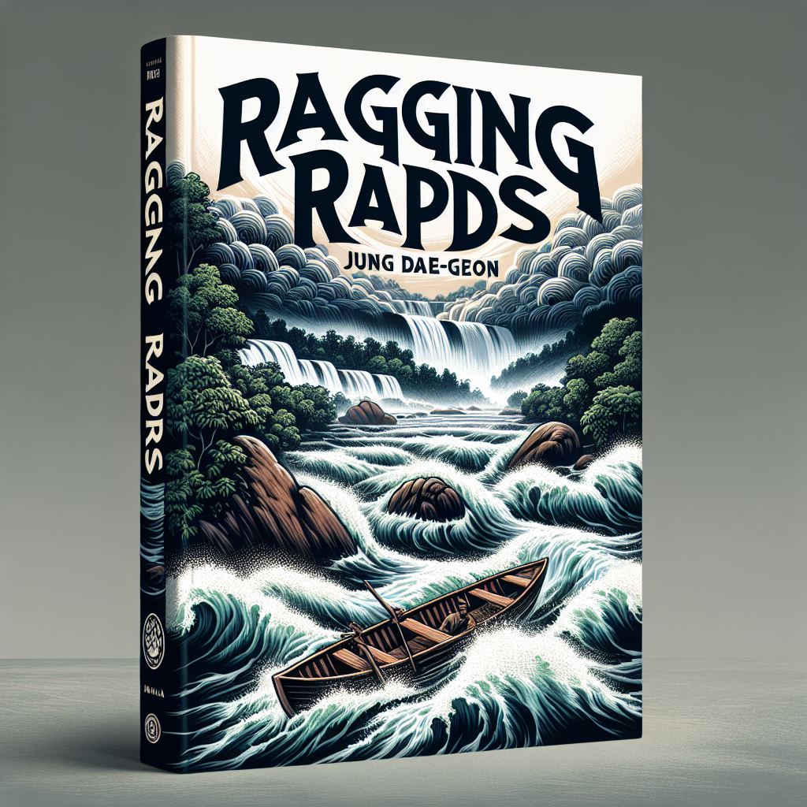

작가
정대건
출판일
2022년
감상평에 대한 AI그림
정대건의 급류는 거센 시대적 흐름 속에서 개인이 겪는 갈등과 성장의 이야기를 강렬하게 그려낸 작품이다. 빠르게 변화하는 사회 속에서 주인공이 겪는 혼란과 선택의 순간들이 현실적으로 다가왔다. 특히 서사 전개가 속도감 있게 흘러가며, 마치 독자도 거센 물살에 휩쓸리는 듯한 느낌을 준다. 작품을 통해 시대의 흐름에 맞서거나 혹은 순응해야 하는 인간의 고민을 깊이 생각해볼 수 있었다.

감상평에 대한 AI평가
~~~~AI평가~~~~~
저도 '급류'를 읽으면서 느낀 점을 말씀드리자면, 이 작품은 개인이 시대적 흐름 속에서 겪는 갈등과 성장을 매우 강렬하게 그려낸 것 같아요. 주인공이 빠르게 변화하는 사회 속에서 겪는 혼란과 선택의 순간들이 현실적으로 다가와서 독자로 하여금 많은 생각을 하게 만들죠.
특히, 서사 전개가 속도감 있게 흘러가며 독자도 마치 거센 물살에 휩쓸리는 듯한 느낌을 주는 점이 인상 깊었어요. 작품을 통해 시대의 흐름에 맞서거나 순응해야 하는 인간의 고민을 깊이 생각해볼 수 있었고, 이는 우리 모두가 한 번쯤 고민해봐야 할 문제라고 생각합니다.
'급류'는 단순한 소설을 넘어, 시대적 흐름 속에서 개인이 겪는 갈등과 성장을 깊이 있게 탐구하는 작품이라고 생각합니다. 여러분의 감상평을 들으니 저도 다시 한 번 이 작품을 읽고 싶어지네요! 😊